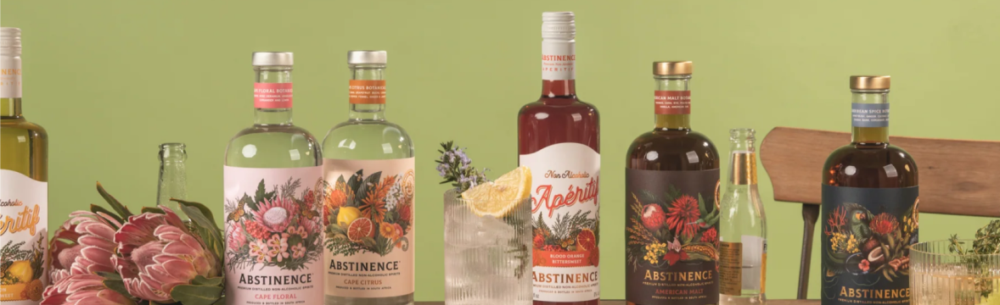
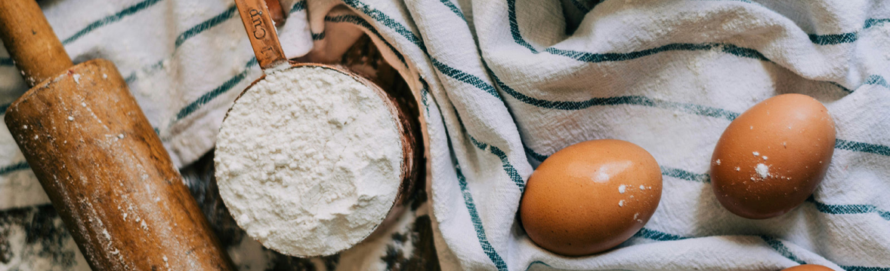
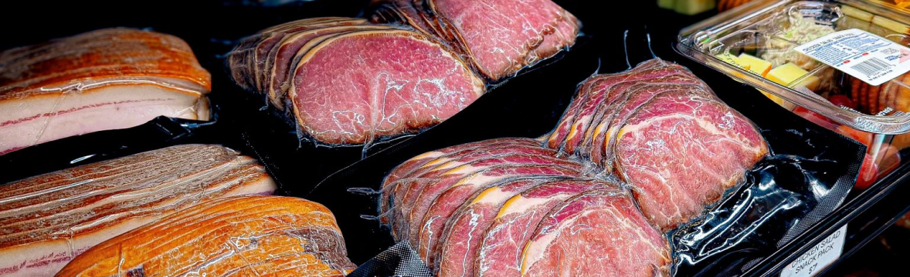

Clients and Startups

Abstinence Spirits
Sophisticated and full of flavor, Abstinence Spirits has non-alcoholic white and dark spirits, bittersweet aperitifs, and ready-to-pour & share spritzes expertly crafted using sustainably sourced botanicals from the diverse Cape Floral Kingdom, in Cape Town, South Africa.

Staccato Bakery
Staccato Bakery was founded by Saleem Ahmed, a Cornell MBA and former finance professional turned DJ and event producer. The name "Staccato" captures that mix of rhythm and flavor -- cookies crafted with balance, intention, and love. The bakery blends his love for music with a knack for precision and quality.

Grow The Earth
Grow The Earth is a pioneering farm to fork food company utilizing regenerative practices, automation, and AI to produce fine food products in Croydon, NH. Grow The Earth believes good health starts with data driven, clean farming. It is their privilege to feed your family.
Your Startup Here!
Are you interested in what we have to offer? Then reach out and join us! If you do, your startup will be shown on this page alongside others.
Explore